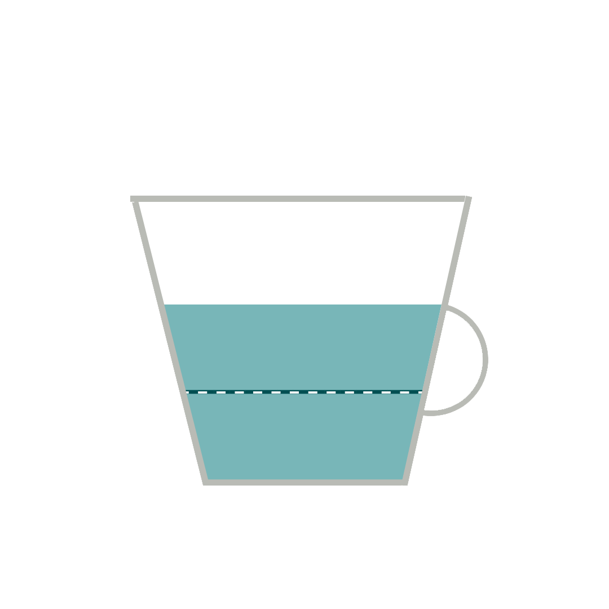
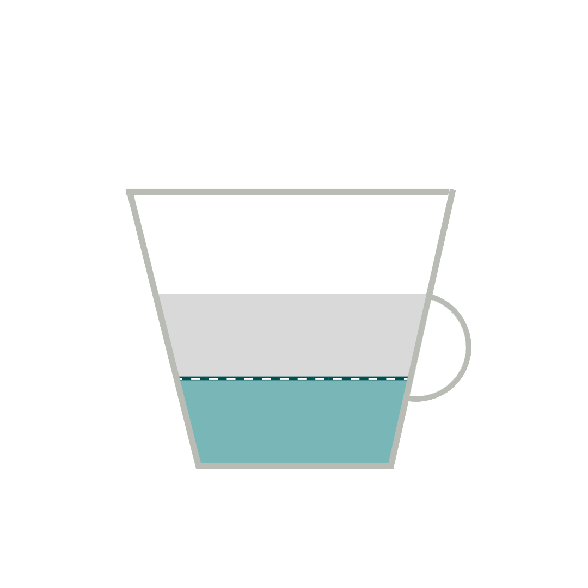

ristretto
Ristretto is a "short shot" (30 ml from a double basket) of a more highly concentrated espresso coffee. It is made with the same amount of ground coffee, but extracted with a finer grind (also in from 20 to 30 seconds) using half as much water. A normal short shot might look like a Ristretto, but in reality, would only be a weaker, more diluted, shot.[1] The opposite of a Ristretto (which means in Italian, "shortened, narrow") is a lungo ("long"), which is a double shot. The French call a ristretto a café serré.
5$
ristretto

macchiato
Caffè macchiato sometimes called espresso macchiato, is an espresso coffee drink with a small amount of milk, usually foamed. In Italian, macchiato means "stained" or "spotted" so the literal translation of caffè macchiato is "stained” or “marked coffee.”
6$
macchiato

doppio
Doppio espresso is a double shot, extracted using a double coffee filter in the portafilter. This results in 60 ml of drink, double the amount of a single shot espresso. More commonly called a standard double, it is a standard in judging the espresso quality in barista competitions but only because four single espresso are made using two double portafilters.
7$
doppio
americano
Caffè Americano (also known as Americano or American) is a type of coffee drink prepared by diluting an espresso with hot water, giving it a similar strength to, but different flavor from, traditionally brewed coffee. The strength of an Americano varies with the number of shots of espresso and the amount of water added. The name is also spelled with varying capitalization and use of diacritics: e.g., café americano.
5$
americano
espresso
Espresso is a coffee-making method of Italian origin, in which a small amount of nearly boiling water is forced under pressure (expressed) through finely-ground coffee beans. Espresso coffee can be made with a wide variety of coffee beans and roasts. Espresso is generally thicker than coffee brewed by other methods, has a higher concentration of suspended and dissolved solids, and has crema on top (a foam with a creamy consistency).
espresso
8$
cappuccino
A cappuccino is an espresso-based coffee drink that originated in Italy, and is traditionally prepared with steamed milk foam (microfoam). Variations of the drink involve the use of cream instead of milk, using non-dairy milks, and flavoring with cinnamon or chocolate powder. It is typically smaller in volume than a caffè latte, with a thicker layer of microfoam.
cappuccino
10$
flat white
A flat white is a coffee drink consisting of espresso with microfoam (steamed milk with small, fine bubbles and a glossy or velvety consistency). It is comparable to a latte, but smaller in volume and with less microfoam, therefore having a higher proportion of coffee to milk, and milk that is more velvety in consistency – allowing the espresso to dominate the flavour, while being supported by the milk.

flat white
10$
latte
Caffe latte (or simply latte) is a coffee drink made with espresso and steamed milk. The word comes from the Italian caffè e latte which means "coffee & milk".